Kargo va logistika kompaniyalari uchun
Tayyor maket: yetkazish hisobli sayt, Telegram bilan mijoz kabineti hamda dispetcherlar, haydovchilar va hujjatlar uchun super admin panel.
Sizning logotipingiz va yo‘nalishlaringizda ko‘rsatamiz. Maket bepul.
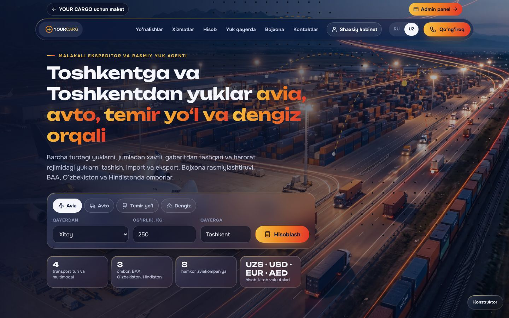
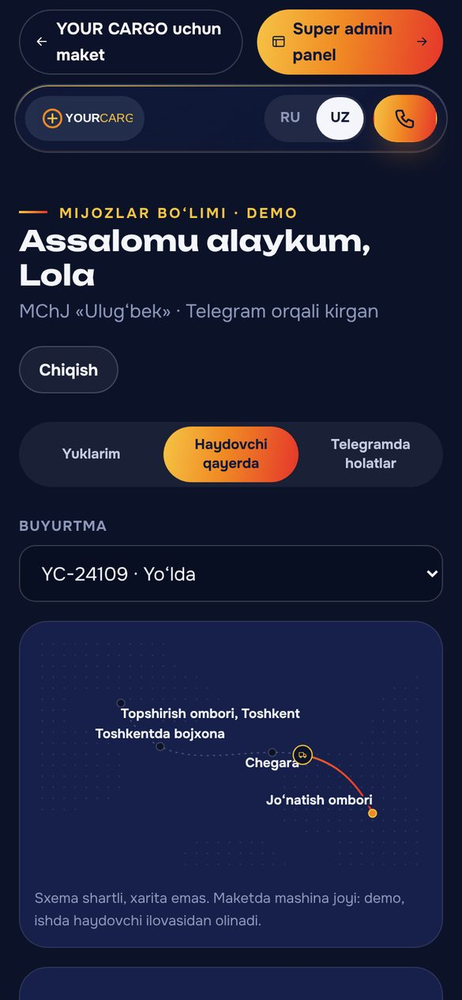
Ko‘pchilik kargo kompaniyalari hozir qanday ishlaydi
Mijoz saytda narxni ko‘rmaydi, messenjerga yozib, menejer hisoblashini kutadi. Kutayotganda raqobatchiga yozadi.
Dispetcher ishlash o‘rniga mijozlarga javob beradi, haydovchilarga qo‘ng‘iroq qiladi va holatni qo‘lda yuboradi.
Kim qayerga borishini Excel va chatlarda hal qilishadi. Mashina yarim bo‘sh ketadi, haydovchi shahar bo‘ylab aylanib yuradi.
Mashina yuklashda 6 soat turadi. Me’yorni hech kim hisoblamagan, mijozdan qo‘shimcha haq olinmagan.
Tirkama raqami, haydovchi pasporti, TIR daftarchasi yozishmalardan yig‘iladi. Bitta xato va mashina postda turadi.
Mijoz kechqurun Instagram’ga yozdi, ertalab uni hech kim topmadi. 1C va Bitrix’ga hammasi ikkinchi marta qo‘lda kiritiladi.
Bitta tizim, uchta ekran
Mijoz narxni o‘zi hisoblaydi, ariza yuboradi va yuk qayerdaligini ko‘radi. Rus va o‘zbek tilida, avvalo telefon uchun.
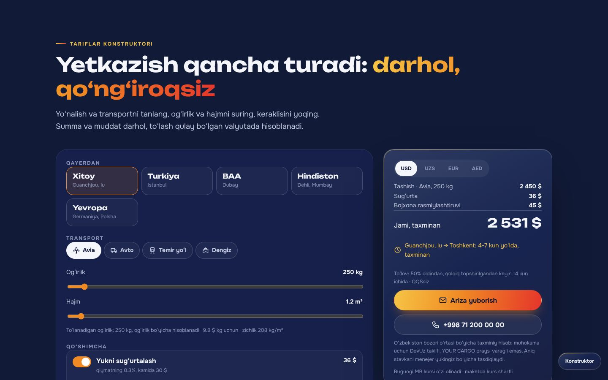
Telegram orqali kirish, barcha yuklar, hujjatlar, xaritada haydovchi, holatlar botga keladi.
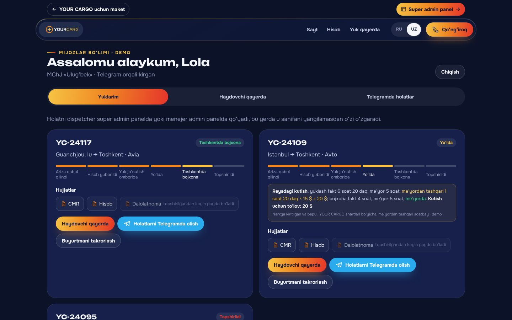
Mashinalarga taqsimlash, marshrutlar, haydovchilar, avtopark, broker hujjatlari, 1C, Bitrix24, Telegram.
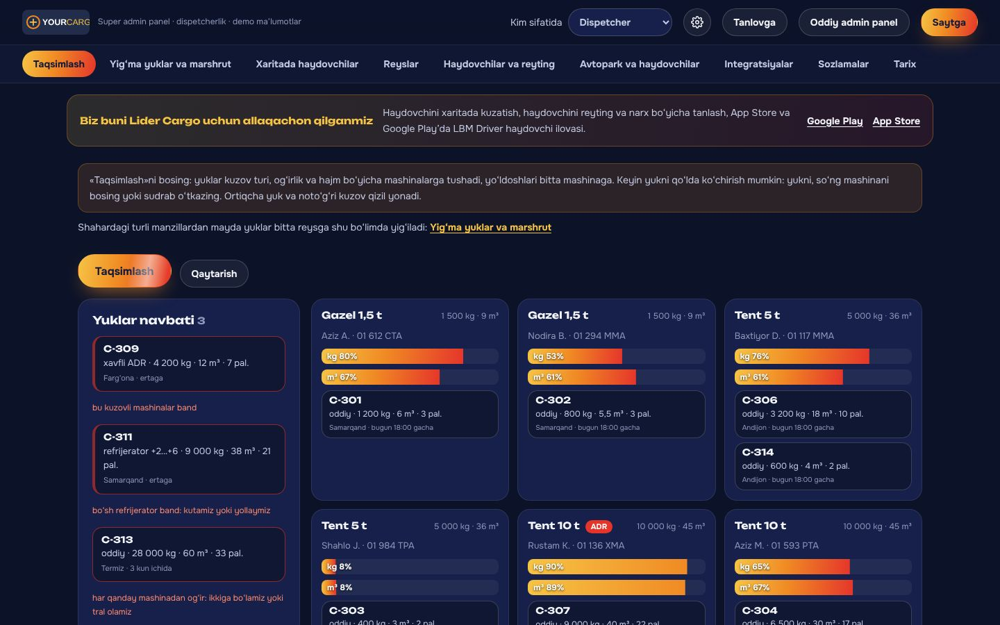
Dispetcher tizimda qo‘ygan holatni mijoz darhol saytda ko‘radi va Telegram’da oladi. Hech kim hech narsani qo‘lda yubormaydi.
Sayt
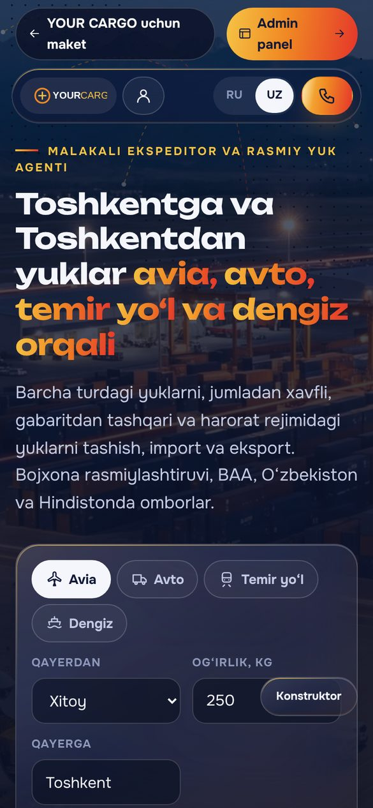
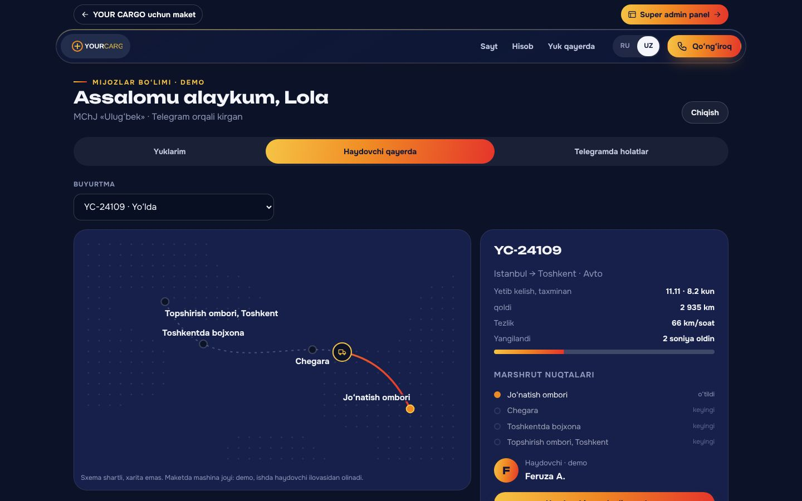
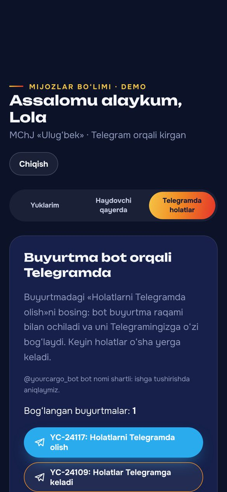
Mijoz kabineti
Oddiy admin panel
Qo‘shimchalar bilan saytga kiradi
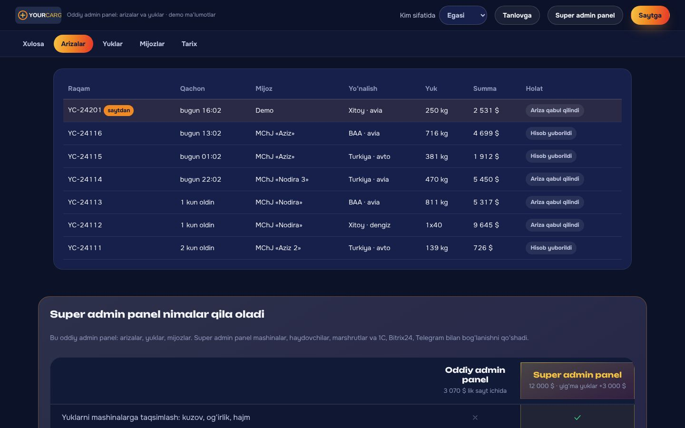
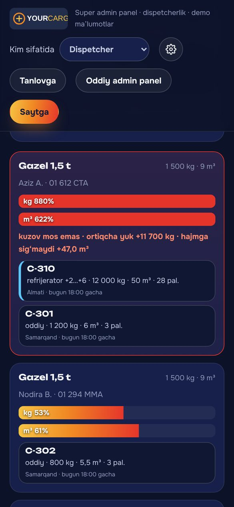
Super admin panel · taqsimlash
Super admin panel · haydovchilar
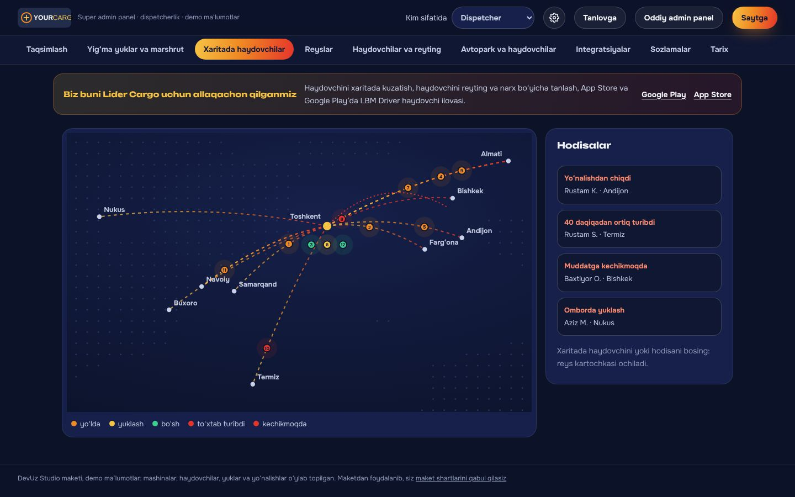
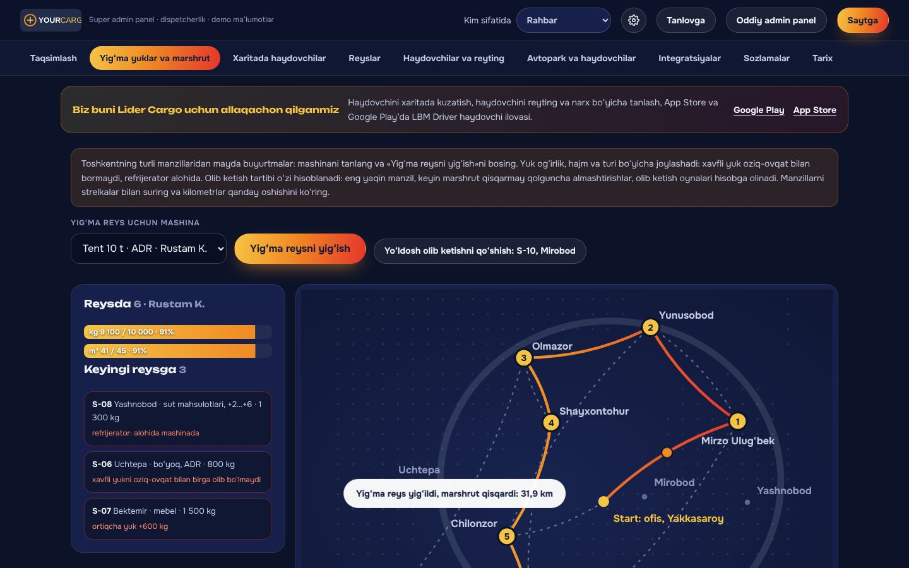
«Yig‘ma yuklar» moduli
Super admin panel · avtopark va bojxona
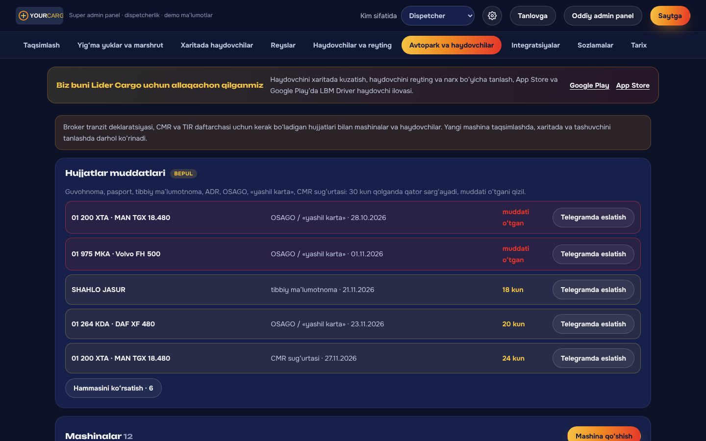
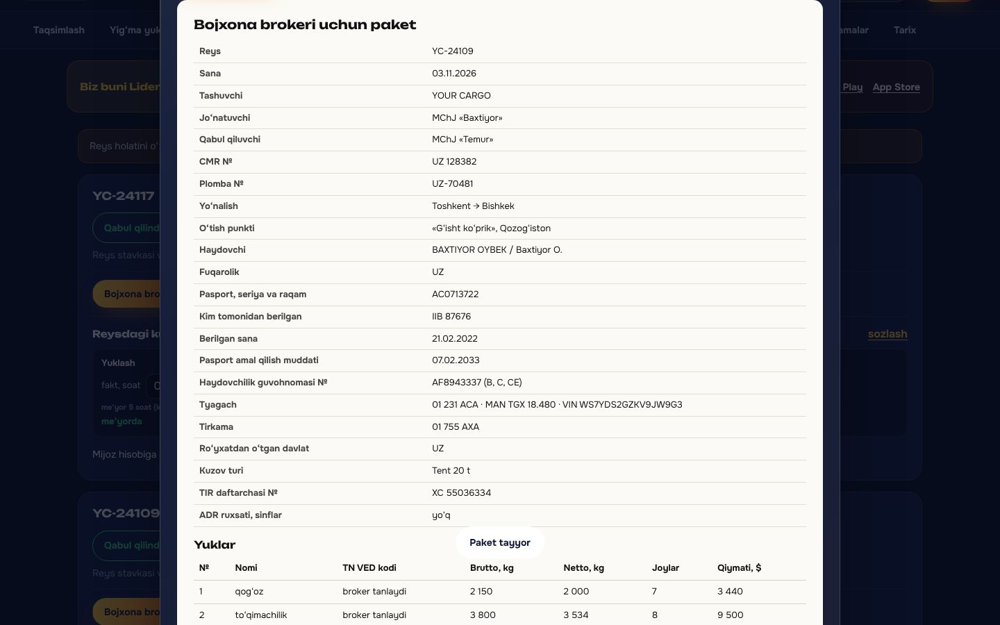
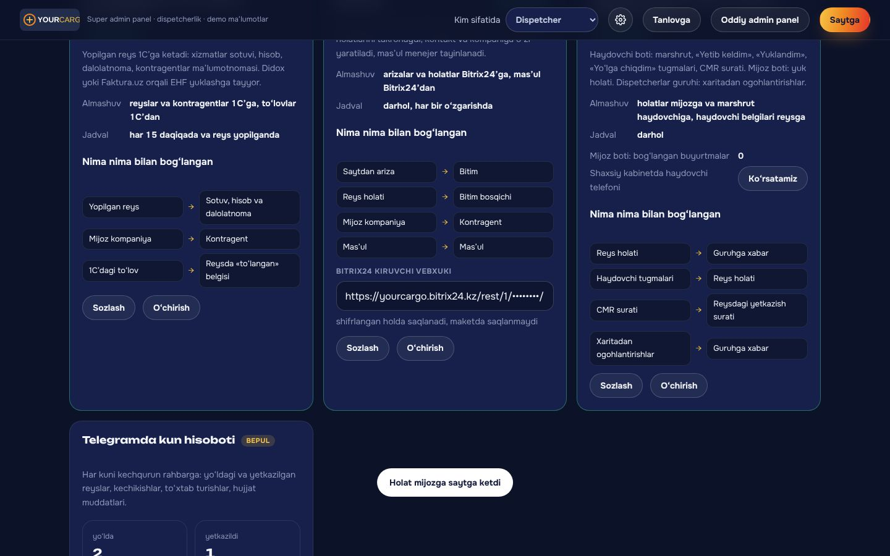
Integratsiyalar · super admin panelda bepul
Super admin panel · sozlamalar
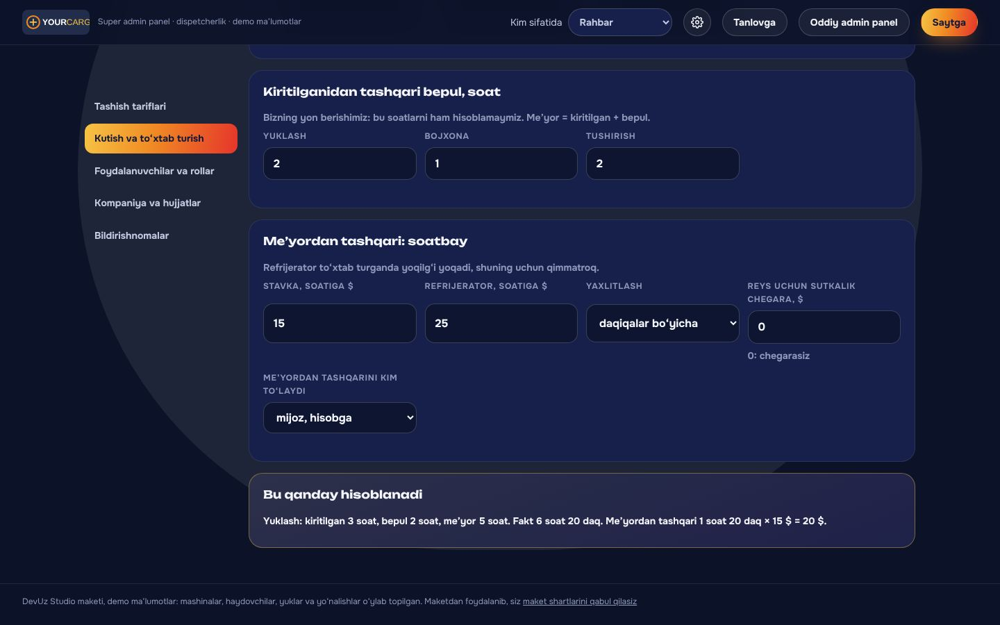
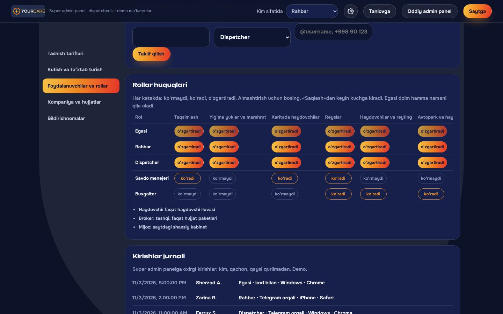
Nega faqat tashqi ko‘rinish muhim emas
| Shunchaki chiroyli sayt | Sayt + avtomatlashtirish | |
|---|---|---|
| Narx | «Menejerga yozing» | Mijoz 10 soniyada o‘zi hisoblaydi |
| Tungi ariza | Ertalabgacha pochtada kutadi | Darhol admin panelda va Bitrix24’da |
| «Yuk qayerda?» | Dispetcherga qo‘ng‘iroq | Kabinetda xarita va Telegram’da bot |
| Mashinalarni yuklash | Excel va chat | Og‘irlik, hajm va kuzov bo‘yicha taqsimlash |
| Kilometrlar | Haydovchi qanday hal qilsa | Olib ketishning qisqa marshruti |
| Turib qolish | Hisobga yozishni unutishdi | O‘zi hisoblanadi va hisobga tushadi |
| Chegara hujjatlari | Yozishmalardan yig‘ishadi | Broker uchun paket bir daqiqada |
| 1C va hisob | Ikkinchi marta kiritishadi | O‘zi ketadi |
Foyda: o‘z raqamlaringizda hisoblang
Turib qolish hisobga
1 500 $
oyiga, agar 100 ta reys bo‘lsa va har birida o‘rtacha 1 soat 15 $ dan to‘lanmagan turib qolish bo‘lsa
Kilometrlar
−36%
maketdagi demo-reysda 6 manzildan olib ketishda yurish: 88,5 → 56,5 km
Dispetcher vaqti
2 soat
kuniga, agar 3 daqiqadan 40 ta «yuk qayerda?» qo‘ng‘irog‘i kabinet va botga o‘tsa
Bu taxminlari yozilgan misollar, va’da emas. Uchrashuvda sizning reyslaringiz, stavkalaringiz va qo‘ng‘iroqlar sonini qo‘yamiz.
Nega hozir
Yuk servislari va birjalar mijozlarni onlayn hisob va mashinani kuzatishga o‘rgatdi. «Qayta qo‘ng‘iroq qilamiz» degan arizani yo‘qotadi.
ESF Didox va Faktura.uz orqali o‘tadi. Tizim buxgalteriya baribir qiladigan ishga qo‘shiladi, ish qo‘shmaydi.
Reyslar, turib qolishlar va kilometrlar tizimga qanchalik erta tushsa, kompaniya pulni qayerda yo‘qotayotgani shunchalik erta ko‘rinadi.
Avval hisobli va arizali sayt, keyin super admin panel. Hammasi allaqachon bog‘langan, qayta qilish kerak bo‘lmaydi.
Allaqachon qilganmiz
Shu loyiha tajribasi super admin panelga kirdi: o‘sha haydovchilar, xarita va reyting, lekin sayt, mijoz kabineti va hujjatlar bilan birga.
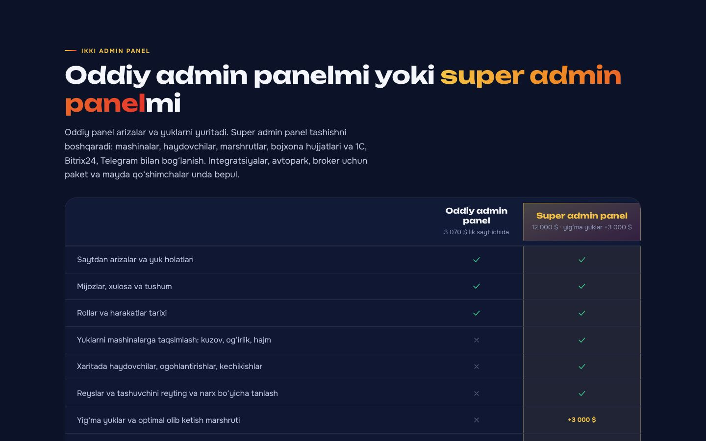
Narxi
Maket bo‘yicha sayt
1 000 $
odatiy narx 4 900 $
Yetkazish hisobi, arizalar, xizmatlar, bojxona, omborlar, ru va uz
| Arizalar va yuklar paneli | 450 $ |
| Yukni raqam bo‘yicha kuzatish | 350 $ |
| Mijozlar bo‘limi: Telegram orqali kirish, bildirishnomalar, xaritada haydovchi | 470 $ |
| Telegram-bot: hisob va yuk holati | 300 $ |
| Bojxona hujjatlari bo‘yicha maslahat | 200 $ |
| MB kursi bo‘yicha UZS, USD, EUR, AED’da hisob | 150 $ |
| «Xitoydan kargo», «Turkiyadan» yo‘nalish sahifalari | 150 $ |
| Barcha qo‘shimchalar bilan sayt | 3 070 $ |
Super admin panel
12 000 $
bozorda MDHda 8 000-20 000 $, Yevropada 40 000-70 000 €
+ Yig‘ma yuklar va optimal olib ketish marshruti
3 000 $
Narxlar maketdagidek. Aniq smeta va muddatlarni qisqa brifdan keyin beramiz.
Qanday boshlash
devuz.studio
t.me/Devuz_studio_bot
+998 90 912-05-78